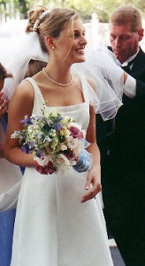

Weddings are my Specialty!
Your wedding will be one of the biggest days of your life don’t let it be the most stressful.
A DJ can make or break your wedding.
Let me make your wedding a night you and your guests will remember for a lifetime. When you hire me I will meet with you as many times as necessary and work with you to plan the wedding of your dream. As your wedding DJ you can rest assure I will make all announcements from your introduction to the last dance with professionalism.
I will also interact with your guests and keep them all on the dance floor. I can also promise you that I will work with your wedding vendors so you can relax and enjoy the day.
After all it’s your Day!
Frequently Asked Questions:
Do you Take requests?
Yes of course that’s what I’m there for to keep your guests entertained.
What will the DJ wear?
I always dress to impress and wear a tuxedo at All of my weddings.
When will the DJ arrive?
I am always at an event at least one hour prior to the start time.
Will you be my DJ?
Yes I will ALWAYS DJ my own weddings and NEVER sub them out unlike other DJs.
If you’re looking for a DJ with experience and professionalism I urge you to call me and schedule an appointment with me.
I promise and guarantee that you will not be disappointed and you will have the wedding of your dreams.